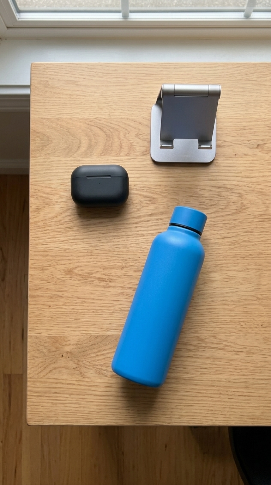

Opening camera…

LIVE
Tap anywhere to search that item
Searching this spot…

Earbuds Case
$49.99
Matched from your scan
Soundcore by Anker
Anker Soundcore Wireless Earbuds Charging Case, Black
4.7 (2,140)
$49.99
✓ Free shipping, arrives tomorrow
Buy now
Add to cart